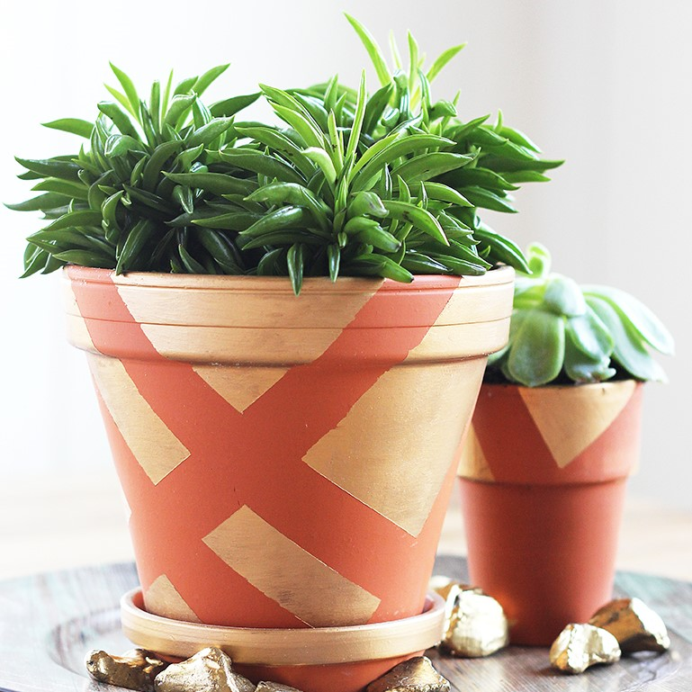
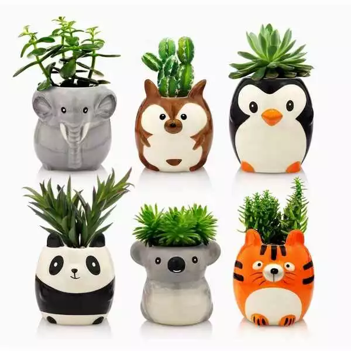
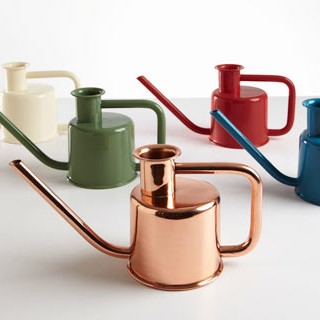
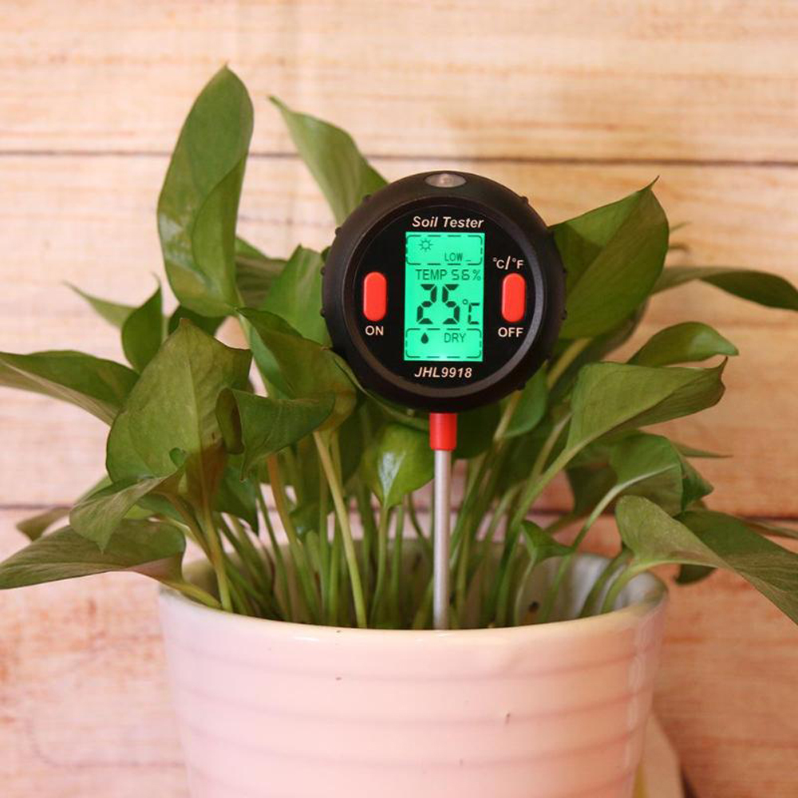
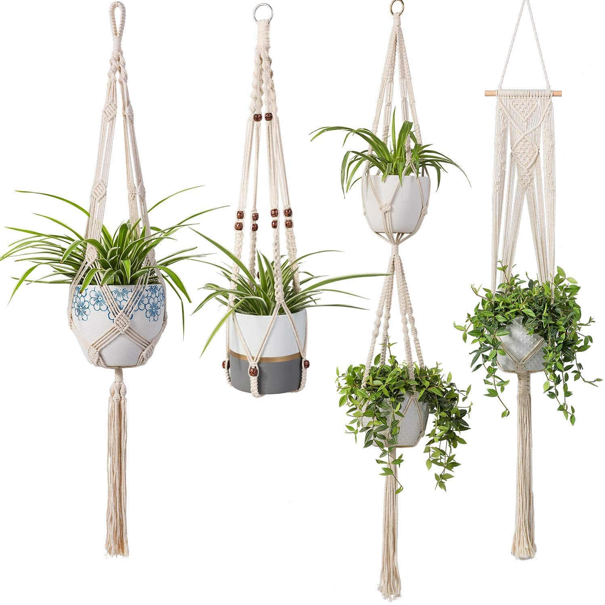
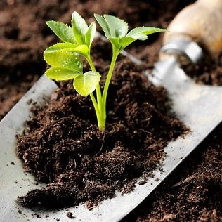

| ITEMS | COST | DESCRIPTION |
|---|---|---|
 |
Clay |
Everyone is a big fan of keeping plants in clay terracotta pots. Their look matches with almost every interior. And clay is porous, meaning excess moisture can evaporate through the sides. Making overwatering less likely. Score! |
 |
Animal Planters |
If you are looking for a fun and whimsical plant lover gift, check out these animal planters. There are many animal-shaped planters to choose from! |
 |
Watering Cans |
All plants need to be watered. Even the most drought-tolerant plants like cacti and succulents, need watering every now and then. You are best off with a watering can with a long spout. Those are ideal to get to the soil under succulents leaves or water plants in hanging baskets. |
 |
Moisture Meter |
A moisture meter is a handy little tool to test soil moisture, pH value, and sunlight level. Useful for every plant parent, but beginner plant parents will especially be grateful for it. |
 |
Macrame Plant Hangers |
Get yourself a ready-made hanging macrame planter basket. Especially wise if there are pets in the home and certain plants might need to be kept out of the pet's reach. |
 |
Organic |
Every plant parent needs plant fertilizer. You can't go wrong here. Plant fertilizer gives plants an energy boost by supplying it with nutrients. Fertilizer should be used during the active growing season. |